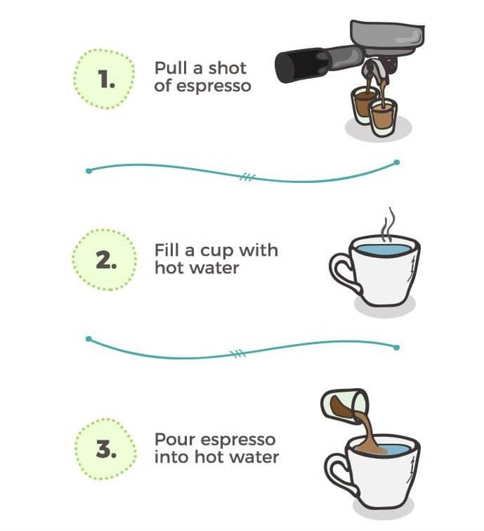

AMERICANO
Americano history
 An Americano is an espresso drink made with hot water and espresso, also called a Caffe Americano.
The drink can be made with either one or two shots of espresso, and varying ratios of water.
Diluting the strong dark espresso roast brings the flavor closer to a drip coffee: which might be where the name originated!
The exact origin of the term is murky, but it’s thought to have originated in the 1970’s.
An Americano is an espresso drink made with hot water and espresso, also called a Caffe Americano.
The drink can be made with either one or two shots of espresso, and varying ratios of water.
Diluting the strong dark espresso roast brings the flavor closer to a drip coffee: which might be where the name originated!
The exact origin of the term is murky, but it’s thought to have originated in the 1970’s.
“Americano” means American in Italian or Spanish, referring to the coffee’s strength being closer to an American-style drip coffee.
A true Americano does not include milk like a latte, cappuccino, or macchiato.
You can add milk if you like, but then it’s not the true form of this drink.
It entered the English language from Italian in the 1970s.
"Caffè Americano" specifically is Italian for "American coffee".
There is a popular but unconfirmed belief that the name has its origins in World War II
when American G.I.s in Italy diluted espresso with hot water to approximate the coffee to which they were accustomed.

Key Ingredients
- 8 ounces of off-boil water
- Two ounces (double shot) of espresso
- Fresh Coffee: Choose coffee beans when you can, and grind them just before you brew.
Equipment
- Espresso Machine: You can also use a Moka pot for an espresso-like drink.
- Gooseneck Kettle: We’ve found electric gooseneck kettles to be easiest to use,
plus they provide more precision than a traditional kettle.
Americano Making

Once you know about the water ratio and espresso technique:
there’s not much to know about this coffee drink! Here are the basic steps for how to make an Americano:
- Decide on your drink size. A 1-shot Americano can mostly fit in an espresso mug.
A 2-shot drink is best suited in a latte mug.
- Make the espresso. Use espresso roast coffee to make espresso using your favorite method:
with an automated espresso machine, manual espresso maker, or Aeropress.
- Boil the water. Use a regular or electric teapot to boil the water.
The standard ratio is 2:1 water to espresso, but you can go up to as much as 3:1.
- Mix the two and enjoy! Pour the boiling water into the espresso. Instant Caffe Americano!
Types of Americano
There are a few variations on a traditional Americano coffee. Try these ratios for a different tasting drink.


- Long Black Americano: 1:2 ratio
- Little Buddy or Italiano Americano: 1:1 ratio
- Iced Americano: 1:4 ratio
Using good ice (with good water) is key to a great tasting, iced Americano.
To make an iced Americano, fill a glass with ice and pour cold water over the ice until the glass is about half full.
Next and finally, pour your espresso over top. The espresso will float a bit, so snap a photo for Instagram and enjoy!